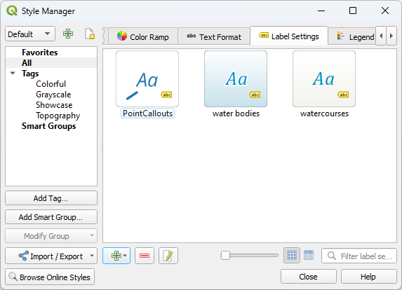

14.3. အညွှန်းစာတစ်ခု သတ်မှတ်ခြင်း (Setting a label)
Label များသည် စာသားအချက်အလက်များဖြစ်ပြီး မြေပုံများ သို့မဟုတ် vector feature များပေါ်တွင် ဖော်ပြနိုင်ပါသည်။ Label များသည် သင်္ကေတ (symbol) များအသုံးပြုပြီး ဖော်ပြရန်မလိုအပ်ပဲ အသေးစိတ်ထည့်သွင်းဖော်ပြပေးပါသည်။ QGIS တွင် အသုံးပြုနိုင်သော စာသားနှင့်ပတ်သက်သည့် items နှစ်မျိုးရှိပါသည်-
Text Format (စာသားပုံစံ) - စာသားများ၏ ပုံပန်းသဏ္ဍာန်ကို သတ်မှတ်ခြင်း၊ font (ဖောင့်) ၊ size (အရွယ်အစား) ၊ colors (အရောင်) ၊ shadow (အရိပ်) ၊ background (နောက်ခံ)၊ buffer (အနားသတ်)၊ …စသည်တို့ပါဝင်ပါသည်။
ထိုအရာများကို မြေပုံပေါ်တွင် (layout/map title (မြေပုံအပြင်အဆင်/မြေပုံခေါင်းစဉ်) ၊ decorations (မြေပုံအလှဆင်ခြင်းများ) ၊ scale bar (စကေးပြအတန်း)၊ …) စာသားများဖော်ပြရန်အတွက် font widget မှတဆင့် အသုံးပြုနိုင်ပါသည်။
Text Format item တစ်ခုကို ဖန်တီးရန်-
 Style Manager dialog ကို ဖွင့်ပါ။
Style Manager dialog ကို ဖွင့်ပါ။Text format tab သို့ သွားပါ။

Fig. 14.21 Style Manager dialog ထဲရှိ စာသားပုံစံများ
 Add item ခလုတ်ကို နှိပ်ပါ။ configuration (ပြင်ဆင်သတ်မှတ်ခြင်း) လုပ်ရန်အတွက် Text Format dialog ပွင့်လာမည် ဖြစ်သည်။ ပုံမှန်အားဖြင့် ထို ဂုဏ်သတ္တိ (properties) များသည် data-definable (Data ဖြင့်သတ်မှတ်နိုင်သော) ဖြစ်ပါသည်။
Add item ခလုတ်ကို နှိပ်ပါ။ configuration (ပြင်ဆင်သတ်မှတ်ခြင်း) လုပ်ရန်အတွက် Text Format dialog ပွင့်လာမည် ဖြစ်သည်။ ပုံမှန်အားဖြင့် ထို ဂုဏ်သတ္တိ (properties) များသည် data-definable (Data ဖြင့်သတ်မှတ်နိုင်သော) ဖြစ်ပါသည်။
Label Settings - တည်နေရာများ သို့မဟုတ်၊ အခြားစာသားများ သို့မဟုတ် feature များနှင့် အပြန်အလှန်ဆက်စပ်မှုများတို့နှင့် ဆက်နွယ်နေသည့် properties များပါသည့် စာသားပုံစံ setting များကို ဖော်ပြခြင်း (callouts (မျဉ်းထိုးအညွှန်းစာများ) ၊ placement (နေရာချထားမှု) ၊ overlay, scale visibility (ဖုံးအုပ်ထားမှု၊ မြင်ရနိုင်သောစကေး) ၊ mask …)
၎င်းတို့ကို vector layer များအတွက် သပ်ရပ်သားနားသောအညွှန်းတပ်ခြင်းကို ပြင်ဆင်သတ်မှတ်ရာတွင် အသုံးပြုနိုင်ပြီး vector Layer Properties dialog သို့မဟုတ် Layer Styling panel ၏
 Labels tab တွင် သို့မဟုတ် Label toolbar ၏ Layer Labeling Options button မှတဆင့် လုပ်ဆောင်နိုင်ပါသည်။
Labels tab တွင် သို့မဟုတ် Label toolbar ၏ Layer Labeling Options button မှတဆင့် လုပ်ဆောင်နိုင်ပါသည်။Label Settings item တစ်ခုကို ဖန်တီးရန်-
- Style Manager dialog ကို ဖွင့်ပါ။
Label Settings tab သို့ သွားပါ။
 Fig. 14.22 Style Manager dialog ထဲရှိ Label Setting များ
- Add item menu ကိုနှိပ်ပြီး မိမိ label တပ်လိုသည့် feature ၏ geometry type နှင့်သက်ဆိုင်သော ထည့်သွင်းခြင်း (entry) ကို ရွေးပါ။
အောက်ဖော်ပြပါ ဂုဏ်သတ္တိများပါဝင်သော Label Settings dialog ပွင့်လာမည် ဖြစ်ပါသည်။ ပုံမှန်အားဖြင့် ထို ဂုဏ်သတ္တိများသည် data-definable (Data ဖြင့်သတ်မှတ်နိုင်သော) ဖြစ်ပါသည်။
14.3.1. အညွှန်းထိုးစာသား ကိုပုံစံပြင်ဆင်ခြင်း (Formatting the label text)
Text Format သို့မဟုတ် Label Settings item တစ်ခုကို ပြင်ဆင်သတ်မှတ်သည့်အခါတွင် အောက်ဖော်ပြပါ ရွေးချယ်မှု (option) များပါဝင်ပါမည်-
Properties tab |
Text format |
Label settings |
|---|---|---|
Text |
|
|
Formatting |
|
|
Buffer |
|
|
Mask |
|
|
Background |
|
|
Shadow |
|
|
Callout |
|
|
Placement |
|
|
Rendering |
|
14.3.1.1. စာသား tab (Text tab)

Fig. 14.23 Labels settings ရှိ စာသား tab
 Text tab ထဲတွင် အောက်ပါတို့ကို သတ်မှတ်နိုင်ပါသည်-
Text tab ထဲတွင် အောက်ပါတို့ကို သတ်မှတ်နိုင်ပါသည်-
Font (ဖောင့်) - ကွန်ပျူတာတွင်ရှိသော ဖောင့်များ
Style (ပုံစံ)- ဖောင့်၏ အသုံးများသောပုံစံများအတိုင်း၊ underlined (စာသားအောက်မှမျဉ်းသားခြင်း) သို့မဟုတ် striked through (စာသားကိုဖြတ်ပြီးမျဉ်းသားခြင်း) ပြုလုပ်ခြင်းများကို ကိုယ်တိုင်သတ်မှတ်နိုင်ပါသည်။
Size (အရွယ်အစား) ကို supported unit (အသုံးပြုနိုင်သော ယူနစ်) များထဲရှိ တစ်ခုခုဖြင့် အသုံးပြုနိုင်ပါသည်။
Color (အရောင်)
Opacity (အလင်းပိတ်နှုန်း)
Allow HTML Formatting - HTML formatting option သည် မိမိစိတ်ကြိုက် label များကို ဖန်တီးရန် အချို့ HTML tag များကို ဖော်ပြပေးစေနိုင်ပါသည်။ အသုံးပြုနိုင်သည့် HTML tag များမှာ-
အရောင်၊ စာသားနှင့်ပတ်သက်သည်များ၊ underline (စာသားအောက်မှမျဉ်းသားခြင်း)၊ strikethrough (စာသားကိုဖြတ်ပြီးမျဉ်းသားခြင်း)၊ နှင့် overline (စာသားအပေါ်မှမျဉ်းသားခြင်း)
ဖောင့် ဂုဏ်သတ္တိများ (ဖောင့်အမျိုးအစား၊ ဖောင့်အရွယ်အစား၊ bold (စာသားထင်းအောင်လုပ်ခြင်း) နှင့် italic (စာသားအစောင်း))
စာသားရှိ Superscript (စာသားအပေါ်တွင် စာလုံးအသေးရေးသားခြင်း) နှင့် subscript (စာသားအောက်တွင် စာလုံးအသေးရေးသားခြင်း) အစိတ်အပိုင်းများ၊ စာလုံးသည် super သို့မဟုတ် sub ဒေါင်လိုက်အတိုင်း ချိန်ညှိမည်ဖြစ်ပြီး၊ ဖောင့်အရွယ်အစားသည် မူရင်းဖောင့်အရွယ်အစား၏ ၃ပုံ ၂ပုံအထိ အလိုအလျောက် ပြောင်းလဲသွားမည်ဖြစ်သည်။ Superscript/subscript အတွက် css rule (စည်းမျဉ်း) များအတိုင်း မိမိကိုယ်တိုင် ဖောင့်အရွယ်အစားသတ်မှတ်နိုင်ပါသည်။ ဥပမာ-
<sup style="font-size:33pt">my superscript text</sup>
vertical-align: superသို့မဟုတ်vertical-align: subCSS formatting rule များသည် အခြားမည်သည့် HTML element (annotation (မှတ်ချက်) ၊ layout label သို့မဟုတ် HTML items …) တွင်မဆိုလည်း ရရှိနိုင်ပါသည်။
HTML formatting ကို အသုံးပြုရန်အလို့ငှာ Value field တွင် HTML code ထည့်ပေးရန် လိုအပ်ပါသည်။ Expression (ခိုင်းစေချက်) ကို ခွဲခြမ်းစိတ်ဖြာပြီး အသုံးပြုနိုင်သော HTML tag တစ်ခုခုသည် label properties ထဲတွင်ရှိသည့် ၎င်း၏သက်ဆိုင်ရာ setting များကို ပြင်ဆင်ရေးသားပါသည်။ ၎င်းတို့သည် label များ၏ အခြား properties များဖြစ်သည့် background ၊ shadow ၊ buffer…စသည်တို့နှင့် ကောင်းမွန်စွာပေါင်းစပ်နိုင်ပါသည်။
အောက်တွင် HTML အခြေခံထားသည့် expression နှင့် ပုံဖော်ပြသခြင်း (rendering) ၏ ဥပမာတစ်ခုကိုကြည့်ပါ (တူညီတဲ့ label တစ်ခုကို မတူညီသောအရောင်နှင့် underlined များကိုအသုံးပြုထားပါသည်)-
format( '<span style="color:blue">%1</span> ( <span style="color:red"><u>%2 ft</u></span> )', title( lower( "Name" ) ), round($length) )

Fig. 14.24 HTML formatting ဖြင့် label ပြုလုပ်ထားခြင်း
Tab ၏ အောက်ခြေတွင်ရှိသော widget တစ်ခုသည် style manager database ထဲတွင် သိမ်းဆည်းထားသည့် အသုံးပြုနိုင်သည့် item များ၏ filterable (စစ်ထုတ်၍ရနိုင်သည့်) list တစ်ခုကို ပြထားပါသည်။ ထိုအရာသည် လက်ရှိ ရှိပြီးသားအရာတစ်ခုကို အခြေခံထားသော စာသား format သို့မဟုတ် label setting ကို လွယ်ကူစွာ configure ပြန်လုပ်ရန် ခွင့်ပြုထားပါသည်။ Style database ထဲတွင် item အသစ်တစ်ခုကို သိမ်းဆည်းရန်လည်း ခွင့်ပြုထားပါသည်။ Save format… သိုမဟုတ် Save settings… button ကို နှိပ်ပြီး အမည်တစ်ခုနှင့် tag(s) (ညွှန်းဆိုသည့်အရာ) ပေးပါ။
Note
Label Settings item တစ်ခုကို ပြင်ဆင်သတ်မှတ်ရာတွင် အဆိုပါ widget ထဲတွင် စာသား format items ကို ရရှိနိုင်ပါသည်။ Label တစ်ခု၏ လက်ရှိ textual properties (စာသားဆိုင်ရာဂုဏ်သတ္တိများ) ကို လျှင်မြန်စွာ ပြင်ဆင်ရေးသားရန် တစ်ခုကို ရွေးပါ။ အလားတူပင် ထိုနေရာမှနေပြီး စာသား format တစ်ခုကို ဖန်တီးခြင်း/ပြင်ဆင်ရေးသားခြင်းများ ဆောင်ရွက်နိုင်ပါသည်။
14.3.1.2. ပုံစံပြင်ဆင်ခြင်း tab (Formatting tab)
Fig. 14.25 Label settings တွင်ရှိသော Formatting tab
 Formatting tab ထဲတွင်-
Formatting tab ထဲတွင်-
စာသားကို စာလုံးအကြီး (Capital) စတိုင်များ ပြောင်းလဲရန် Type case option ကို သုံးပါ။ စာသားများကို အောက်ပါအတိုင်းဖော်ပြနိုင်ပါသည်-
No change (ပြောင်းလဲမှုမရှိ)
All uppercase (စာသားအားလုံး စာလုံးအကြီးပြောင်းရန်)
All lowercase (စာသားအားလုံး စာလုံးအသေးပြောင်းရန်)
Title case - စကားလုံးတစ်ခုစီ၏ ပထမဆုံးစာလုံးကို စာလုံးအကြီးအဖြစ် ပြောင်းလဲပေးပြီး မူရင်းစာသားသည် single type (ပုံစံတစ်မျိုးထဲ) တစ်ခုကို အသုံးပြုထားလျှင် ကျန်စာလုံးများသည် စာလုံးအသေးသို့ ပြောင်းလဲသွားမည် ဖြစ်သည်။ စာသားတွင် mixed type (ပုံစံရောနှောပါဝင်ခြင်း) အသုံးပြုထားလျှင် အခြားစာလုံးများသည် မပြောင်းလဲပဲကျန်ရှိမည် ဖြစ်သည်။
Force first letter to capital - စကားလုံးတစ်ခုစီ၏ ပထမဆုံးစာလုံးများကို စာလုံးကြီးသို့ ပြောင်းလဲပေးပြီး စာသားအတွင်းရှိ ကျန်သောစာလုံးများ မပြောင်းလဲပဲကျန်ရှိမည် ဖြစ်သည်။
Spacing အောက်တွင် စာလုံးများကြားရှိ space နှင့် အက္ခရာတစ်ခုစီ၏ကြားရှိ space ကို ပြောင်းလဲပေးမည် ဖြစ်သည်။
Stretch (ဆွဲဆန့်မှု) အချိုး - စာသားများကို factor တစ်ခုဖြင့် ရေပြင်ညီ ဆွဲဆန့်ခြင်းနှင့် ချုံ့ခြင်းများ ပြုလုပ်နိုင်သည်။ Label ထဲတွင် စာသားအများအပြားကို ထည့်သွင်းနိုင်ရန် font ၏အကျယ်ကို ချိန်ညှိခြင်းအတွက် အသုံးဝင်ပါသည်။
စာသားဖောင့် ၏
 Enable kerning
Enable kerningText orientation (စာသား၏ဦးတည်ရာ) ကို သတ်မှတ်ပါ။ ၎င်းသည် စာသားကို Horizontal (ရေပြင်ညီ) သို့မဟုတ် Vertical (ဒေါင်လိုက်) ပြောင်းလဲနိုင်ပါသည်။ Label တစ်ခု ချမှတ်သည့်အခါတွင် ၎င်းသည် Rotation-based (လှည့်ထောင့်ပေါ်မူတည်မှု) ဖြစ်နိုင်ပါသည်။ (ဥပမာ - parallel placement mode ထဲတွင် line feature များ၏ label ကို မှန်ကန်စွာတပ်ရန်)
Label များနှင့် ၎င်းတို့အောက်တွင်ရှိသည့် မြေပုံ feature များ မည်သို့ရောစပ်မည်ဆိုသည်ကို ဆုံးဖြတ်ရန် Blend mode option ကို အသုံးပြုပါ။ (အသေးစိတ်ကို ရောစပ်ခြင်းနည်းလမ်းများ (Blending Modes) တွင်လေ့လာနိုင်ပါသည်)
 Apply label text substitutes option သည် feature label များထဲရှိ စာသားများကို စာသားအစုတစ်ခုဖြင့် အစားထိုးသတ်မှတ်ရန် ခွင့်ပြုပေးပါသည်။ (ဥပမာ - လမ်းအမျိုးအစားများကို အတိုချုပ်ပေးခြင်း) အစားထိုးထားသည့် စာသားများကို မြေပုံပေါ်တွင် label များ ဖော်ပြသည့်အခါ အသုံးပြုပါသည်။ အစားထိုးထားသည့် စာသားများကို ပြန်လည်အသုံးပြုရန် နှင့် ဝယ်ကူစွာဝေမျှရန် export (ထုတ်ယူခြင်း) နှင့် import (ထည့်သွင်းခြင်း) ပြုလုပ်နိုင်ပါသည်။
Apply label text substitutes option သည် feature label များထဲရှိ စာသားများကို စာသားအစုတစ်ခုဖြင့် အစားထိုးသတ်မှတ်ရန် ခွင့်ပြုပေးပါသည်။ (ဥပမာ - လမ်းအမျိုးအစားများကို အတိုချုပ်ပေးခြင်း) အစားထိုးထားသည့် စာသားများကို မြေပုံပေါ်တွင် label များ ဖော်ပြသည့်အခါ အသုံးပြုပါသည်။ အစားထိုးထားသည့် စာသားများကို ပြန်လည်အသုံးပြုရန် နှင့် ဝယ်ကူစွာဝေမျှရန် export (ထုတ်ယူခြင်း) နှင့် import (ထည့်သွင်းခြင်း) ပြုလုပ်နိုင်ပါသည်။Multiple lines များကို ပြင်ဆင်သတ်မှတ်ရာတွင်-
Wrap on character option ဖြင့် စာသားထဲတွင် စာကြောင်းများခွဲခြင်းကို လုပ်ဆောင်ပေးသည့် character တစ်ခုသတ်မှတ်ပါ။
Wrap lines to option ကို အသုံးပြုပြီး auto-wrapping (အလိုအလျောက်အုပ်လွှမ်းခြင်း) အတွက် အသင့်တော်ဆုံး line အရွယ်အစားကို သတ်မှတ်ပါ။ အရွယ်အစားသည် Maximum line length (အများဆုံး line အလျား) သို့မဟုတ် Minimum line length (အနည်းဆုံး line အလျား) တစ်ခုခုကို ကိုယ်စားပြုနိုင်ပါသည်။
Line Height (လိုင်းအမြင့်) ကို ရွေးချယ်ပါ - တန်ဖိုးများကို Millimeters (မီလီမီတာ) ၊ Points (ပွိုင့်) ၊ Pixels ၊ Percentage (ရာခိုင်နှုန်း) ၊ သို့မဟုတ် Inches (လက်မ) များဖြင့် သတ်မှတ်နိုင်ပါသည်။ Line အမြင့်ကို ရာခိုင်နှုန်းဖြင့် သတ်မှတ်ပါက ၎င်း font family (မျိုးတူဖောင့်) ၏ မူလပါဝင်သော text line spacing (စာသားအစိတ်အကျဲ) ၏ ရာခိုင်နှုန်းဖြစ်ပါသည်။ ပုံမှန်အားဖြင့် စာသားအရွယ်အစား၏ ၁.၂ မှ ၁.၅ အဆ ဖြစ်ပါသည်။
Alignment ပုံစံသတ်မှတ်ခြင်း - ရရှိနိုင်သည်များမှာ Left (ဘယ်ဘက်ကိုကပ်ခြင်း)၊ Right (ညာဘက်သို့ကပ်ခြင်း)၊ Justify (ဘယ်ညာအညီဖြစ်စေခြင်း) နှင့် Center (အလယ်တွင်ကျရောက်စေခြင်း) တို့ဖြစ်ပါသည်။
Point label property များသတ်မှတ်သည့်အခါတွင် စာသား၏ alignment (ညီညာတန်းစေမှု) သည် Follow label placement (label နေရာထားရှိမှုအတိုင်း) လည်း ဖြစ်နိုင်ပါသည်။ ဒီကိစ္စတွင် alignment သည် point နှင့်ဆက်စပ်လျှက်ရှိသော label ၏ နောက်ဆုံးထားရှိမှုအပေါ်မူတည်ပါသည်။ ဥပမာ - Label ကို point ၏ ဘယ်ဘက်မှာထားခဲ့မည်ဆိုလျှင် label သည် ညာဘက်ကိုချိန်ညှိမှာဖြစ်ပြီး ညာဘက်တွင်ထားခဲ့မည်ဆိုလျှင် label သည် ဘယ်ဘက်ကို ချိန်ညှိမှာဖြစ်ပါသည်။
Note
မျဉ်းကွေးများပေါ် အခြေခံသည့် label placement (label နေရာချထားမှု) တွင် Multiple lines formatting ကိုထောက်ပံ့မပေးသေးပါ။ ထိုအခါတွင် ရွေးချယ်မှု (option) သည် ဆက်လက်လုပ်ဆောင်မည်မဟုတ်ပါ။
Line label များအတွက် line ၏ဦးတည်ရာကို ကူညီဆုံးဖြတ်ရန် Left သို့မဟုတ် Right ညွှန်ပြရန် သင်္ကေတ များပါဝင်သည့် Line direction သင်္ကေတ ကို ထည့်သွင်းအသုံးပြုနိုင်ပါသည်။ ၎င်းတို့သည် Placement tab မှ curved (မျဉ်းကွေး) သို့မဟုတ် Parallel (မျဉ်းပြိုင်) နေရာထားရှိမှု option များဖြင့် အသုံးပြုသည့်အခါ ကောင်းမွန်စွာ အလုပ်လုပ်ပါသည်။ သင်္ကေတ များ၏အနေအထားကို သတ်မှတ်ရန် နှင့်
Reverse direction (ပြောင်းပြန်ဦးတည်ရာကို ပိတ်ခြင်း) ပြုလုပ်ရန် option များ ပါရှိပါသည်။- Formatted numbers option ကို ကိန်းဂဏန်းစာသားများကို ပုံစံချရန် အသုံးပြုပါ။ Decimal places (ဒဿမနေရာများ) အရေအတွက်ကို သတ်မှတ်နိုင်ပါသည်။ မူလအားဖြင့် ဒဿမ
3နေရာကို အသုံးပြုမည်ဖြစ်ပါသည်။ အပေါင်းကိန်းများအတွက် အပေါင်းလက္ခဏာကို ပြသချင်ပါက Show plus sign ကို အသုံးပြုပါ။
14.3.1.3. ကြားခံဇုံ tab (Buffer tab)

Fig. 14.26 Label settings တွင်ရှိသော Buffer tab
Label ၏ ပတ်လည်တွင် buffer တစ်ခုဖန်တီးရန်  Buffer tab အတွင်းရှိ Draw
text buffer checkbox ကို အမှန်ခြစ်ပါ။ ထို့နောက် အောက်ပါတို့ကိုဆောင်ရွက်နိုင်ပါသည်-
Buffer tab အတွင်းရှိ Draw
text buffer checkbox ကို အမှန်ခြစ်ပါ။ ထို့နောက် အောက်ပါတို့ကိုဆောင်ရွက်နိုင်ပါသည်-
supported unit (အသုံးပြုနိုင်သည့်ယူနစ်) တစ်ခုခုဖြင့် buffer ၏ Size (အရွယ်အစား) ကို သတ်မှတ်ပါ။
Buffer ၏ Color (အရောင်) ကို ရွေးပါ။
- Color buffer’s fill - Buffer သည် Label ၏ ကောက်ကြောင်းမှ ဖြန့်ထွက်လာမည်ဖြစ်ပါသည်။ ဒါကြောင့် option ကို ဖွင့်လိုက်သည့်အချိန်တွင် Label ၏ အတွင်းပိုင်းကို ဖြည့် (fill) သွားပါမည်။ ထိုအရာသည် တစိတ်တပိုင်း ဖောက်ထွင်းမြင်နိုင်သော (partially transparent) label သို့မဟုတ် label ၏ စာသားများနောက်သို့မြင်နိုင်သည့် non-normal (ပုံမှန်မဟုတ်သည့်) blending mode များကိုအသုံးပြုရာတွင် သင့်တော်ပါသည်။ Option ကို အမှန်ဖြစ်မပြုလုပ်ထားလျှင် (လုံးဝဖောက်ထွင်းမြင်နိုင်သော label ကို အသုံးပြုစဉ်) လုပ်ခြင်းသည် အနားသပ်ကောက်ကြောင်းပါဝင်သော စာသား label များကို ဖန်တီးရန် ခွင့်ပြုပါလိမ့်မည်။
Buffer ၏ Opacity (အလင်းပိတ်နှုန်း) ကို သတ်မှတ်ပါ။
Pen join style (လိုင်းတစ်ခုနှင့်တစ်ခုထိစပ်ပုံ) တစ်ခုကို အသုံးချခြင်း - ၎င်းသည် Round (စောင်းလုံး) ၊ Miter (စောင်းတိ) သို့မဟုတ် Bevel (စောင်းသတ်) ဖြစ်နိုင်ပါသည်။
Label ၏ buffer သည် label ၏အောက်တွင်ရှိသည့် မြေပုံအစိတ်အပိုင်းများနှင့် ဘယ်လိုရောစပ်မည်ဆိုသည်ကို ဆုံးဖြတ်ရန် Blend mode option ကို အသုံးပြုပါ။ (အသေးစိတ်ကို ရောစပ်ခြင်းနည်းလမ်းများ (Blending Modes) တွင်လေ့လာနိုင်ပါသည်)
စာသားများအား ဖတ်ရှုနိုင်မှုကို တိုးတက်စေရန်အတွက် အဆင့်မြင့်
 paint effects ကို ထည့်သွင်းရန် Draw effects ကို အမှန်ခြစ်ပါ။ ဥပမာ - အပြင်ဘက်အပိုင်း တောက်ပခြင်းနှင့် မှုန်ဝါးခြင်း။
paint effects ကို ထည့်သွင်းရန် Draw effects ကို အမှန်ခြစ်ပါ။ ဥပမာ - အပြင်ဘက်အပိုင်း တောက်ပခြင်းနှင့် မှုန်ဝါးခြင်း။
14.3.1.4. နောက်ခံထည့်သွင်းခြင်းဆိုင်ရာ tab (Background tab)
Background tab သည် label တစ်ခုစီ၏အောက်တွင်ရှိသော ပုံစံတစ်ခုကို ပြင်ဆင်သတ်မှတ်ရန် ခွင့်ပြုပေးမည် ဖြစ်ပါသည်။ Background တစ်ခုထည့်ရန် Draw Background checkbox ကို အမှန်ခြစ်ပြီး Shape အမျိုးအစားကို ရွေးပါ။ ဖြစ်နိုင်သည့်ပုံစံများမှာ-
{kind=link}
fill symbol တစ်ခု၏ ဂုဏ်သတ္တိအပြည့်အစုံကိုအသုံးပြုသည့် Rectangle (ထောင့်မှန်စတုဂံ) ၊ Square (စတုရန်း) ၊ Circle (စက်ဝိုင်း) သို့မဟုတ် Ellipse (ဘဲဥပုံ) ကဲ့သို့သော သာမာန်ပုံသဏ္ဍာန်တစ်ခု
ဖိုင်တစ်ခု ၊ URL တစ်ခု သို့မဟုတ် project သို့မဟုတ် စတိုင် database ထဲတွင်ထည့်သွင်းထားသည့် SVG သင်္ကေတတစ်ခု (အသေးစိတ်ကြည့်ရှုရန်)
သို့မဟုတ် Marker Symbol တစ်ခု ကို symbol library (သင်္ကေတများစုစည်းရာနေရာ) မှ ဖန်တီးခြင်း သို့မဟုတ် ရွေးချယ်ခြင်းများ ပြုလုပ်နိုင်ပါသည်။
Fig. 14.27 Label settings တွင်ရှိသော Background tab
ရွေးချယ်ထားသော ပုံသဏ္ဍာန်အပေါ်မူတည်၍ အောက်ပါ ဂုဏ်သတ္တိအချို့ကို ပြင်ဆင်သတ်မှတ်ရန် လိုအပ်ပါသည်-
Label ဘေးဘောင်၏ Size type (အရွယ် အမျိုးအစား) သည် အောက်ပါအတိုင်းဖြစ်နိုင်ပါသည်-
Fixed - စာသား၏အရွယ်အစားကို ထည့်သွင်းမစဉ်းစားဘဲ label အားလုံးအတွက် တူညီသည့်အရွယ်အစားကို အသုံးပြုခြင်း။
သို့မဟုတ် စာသား၏ဘေးဘောင်အကွက် (bounding box) ပေါ်တွင် Buffer ကို အသုံးပြုခြင်း။
supported units (အသုံးပြုနိုင်သည့်ယူနစ်) တစ်ခုခုအသုံးပြုထားသည့် X နှင့် Y လားရာများအတွင်း ဘောင်၏ Size (အရွယ်အစား)
Sync with label ၊ Offset of label နှင့် Fixed အကြားရှိ background ၏ Rotation (လှည့်ထောင့်) တစ်ခု။ နောက်ဆုံးနှစ်ခုသည် ဒီဂရီဖြင့်ဖော်ပြသည့် ထောင့်တန်ဖိုးလိုအပ်ပါသည်။
Offset X,Y သည် X နှင့်/သို့မဟုတ် Y လားရာအတွင်း background item ကို ရွှေ့ရန်ဖြစ်ပါသည်။
Radius X,Y သည် background ပုံသဏ္ဌာန်၏ ဒေါင့်များကို လုံးဝိုင်းရန်အတွက်ဖြစ်ပါသည်။ (ထောင့်မှန်စတုဂံ နှင့် စတုရန်းပုံသဏ္ဌာန်များတွင်သာ အသုံးပြုနိုင်ပါသည်)
Background ၏ Opacity (အလင်းပိတ်နှုန်း)
Blend mode သည် ပုံဖော်ပြသရာတွင် backrgound နှင့် အခြား item များကို ရောနှောရန် ဖြစ်ပါသည်။ (အသေးစိတ်ကို ရောစပ်ခြင်းနည်းလမ်းများ (Blending Modes) တွင် ကြည့်ပါ)
SVG သင်္ကေတ အတွက် ၎င်း၏ မူရင်းပါဝင်သော ဂုဏ်သတ္တိများကို အသုံးပြုနိုင်ပါသည်။ (Load သင်္ကေတ parameters (သင်္ကေတသတ်မှတ်ချက်များထည့်သွင်းခြင်း)) သို့မဟုတ် Fill color (အဖြည့်အရောင်) ၊ Stroke color (လိုင်းအရောင်) နှင့် Stroke width (လိုင်းအထူ) တို့ကို ကိုယ်တိုင်ဖန်တီးနိုင်ပါသည်။
စာသားများအား ဖတ်ရှုနိုင်မှုကို တိုးတက်စေရန်အတွက် အဆင့်မြင့်
paint effects ကို ထည့်သွင်းရန် Draw effects ကို အမှန်ခြစ်ပါ။ ဥပမာ - အပြင်ဘက်အပိုင်း တောက်ပခြင်းနှင့် မှုန်ဝါးခြင်း။
14.3.1.5. အရိပ်ထည့်ခြင်းဆိုင်ရာ tab (Shadow tab)

Fig. 14.28 Label settings ထဲတွင်ရှိသော Shadow tab
စာသားထဲသို့ အရိပ်တစ်ခု ထည့်သွင်းရန်  Shadow tab သို့သွားပြီး Draw drop shadow ကို အမှန်ခြစ်ပါ။ ထို့နောက် အောက်ပါအတိုင်းဆောင်ရွက်နိုင်ပါသည်-
Shadow tab သို့သွားပြီး Draw drop shadow ကို အမှန်ခြစ်ပါ။ ထို့နောက် အောက်ပါအတိုင်းဆောင်ရွက်နိုင်ပါသည်-
Draw under တွင် အရိပ်တစ်ခုဖြစ်ပေါ်စေရန် အသုံးပြုမည့် item ကို ဖော်ညွှန်းပါ။ ထိုအရာသည် Lowest label component သို့မဟုတ် Text ကိုယ်တိုင်ကဲ့သို့သော သီးခြားအစိတ်အပိုင်းတစ်ခု၊ Buffer သို့မဟုတ် Background များ ဖြစ်နိုင်ပါသည်။
အရိပ်ပြုလုပ်ချင်သော item မှ အရိပ်၏ Offset (အရွေ့) ကို သတ်မှတ်ပါ။ ဆိုလိုသည်မှာ-
ထောင့် - နာရီလက်တံအတိုင်း၊ ထိုအရာသည် item ၏ Orientation (ဦးတည်ရာ) အပေါ်တွင်မူတည်ပါသည်
အရိပ်ပြုလုပ်ချင်သော item မှ offset အကွာအဝေး
Offset ၏ ယူနစ်များ
Use global shadow checkbox ကို အမှန်ခြစ်လိုက်လျှင် ထောင့်တစ်ခု၏သုညအမှတ်သည် မြောက်ဘက်သို့ အမြဲလိုလိုဦးတည်နေမည်ဖြစ်ပြီး Label item ၏ ဦးတည်ရာအပေါ် မူတည်ခြင်းမရှိပါ။အရိပ်၏ ပုံပန်းသဏ္ဌာန် သက်ရောက်မှုကို Blur radius ဖြင့်ပြုလုပ်ပါ။ မိမိရွေးချယ်သည့် ယူနစ်တွင် နံပါတ်မြင့်လေ အရိပ်သည် အရောင်ဖျော့လေ ဖြစ်ပါသည်။
အရိပ်၏ Opacity (အလင်းပိတ်နှုန်း) ကို သတ်မှတ်ပါ။
Scale factor ကို အသုံးပြုပြီး အရိပ်၏ အရွယ်အစားကို ပြန်လည်ချိန်ညှိပါ။
အရိပ်၏ Color (အရောင်) ကို ရွေးပါ။
Label ၏ အရိပ်နှင့် ၎င်း၏အောက်တွင်ရှိသော မြေပုံအစိတ်အပိုင်းများနှင့် မည်သို့ရောစပ်သည်ဆိုသည်ကို ဆုံးဖြတ်ရန် Blend mode option ကို အသုံးပြုပါ။ (အသေးစိတ်ကို ရောစပ်ခြင်းနည်းလမ်းများ (Blending Modes) တွင်လေ့လာနိုင်ပါသည်။)
14.3.2. Label အပြုအမူကို သတ်မှတ်ခြင်း (Configuring interaction with labels)
အထက်တွင် ဖော်ပြခဲ့သည့် စာသားပုံစံပြင်ဆင်သတ်မှတ်ခြင်းအပြင် Label တစ်ခုနှင့်တစ်ခု သို့မဟုတ် Feature များနှင့် အပြန်အလှန်ဆက်သွယ်မှုများကိုလည်း ပြုပြင်နိုင်သည်။
14.3.2.1. ဖုံးအုပ်ခြင်းဆိုင်ရာ tab (Mask tab)
 Mask tab သည် Label များပတ်လည်တွင်ရှိသော mask ဧရိယာတစ်ခုကို သတ်မှတ်ရန် အသုံးပြုနိုင်သည်။
၎င်း feature သည် အရောင်ဆင်တူသည့် သင်္ကေတများနှင့် label များ ထပ်နေသည့်အခါတွင် label များကို မြင်သာစေရန်အတွက်
အလွန်အသုံးဝင်ပါသည်။
Mask tab သည် Label များပတ်လည်တွင်ရှိသော mask ဧရိယာတစ်ခုကို သတ်မှတ်ရန် အသုံးပြုနိုင်သည်။
၎င်း feature သည် အရောင်ဆင်တူသည့် သင်္ကေတများနှင့် label များ ထပ်နေသည့်အခါတွင် label များကို မြင်သာစေရန်အတွက်
အလွန်အသုံးဝင်ပါသည်။
Fig. 14.29 Labels settings ထဲတွင်ရှိသော Mask tab (တခြားသော layer ကိုဖယ်ထုတ်ပြီး sample text ကိုအစိမ်းရောင်နောက်ခံနှင့် ပြသထားပါသည်)
Label များတွင် masking effect များ ဖန်တီးရန်-
- tab ရှိ Enable mask checkbox ကို activate ပြုလုပ်ပါ။
ထို့နောက် အောက်ပါတို့ကို သတ်မှတ်နိုင်ပါသည်-
supported units (အသုံးပြုနိုင်သည့်ယူနစ်) တစ်ခုခုကို အသုံးပြုပြီး Mask ၏ Size (အရွယ်အစား) ကို သတ်မှတ်ခြင်း
Label ပတ်လည်တွင်ရှိသော mask ဧရိယာ၏ Opacity (အလင်းပိတ်နှုန်း) သတ်မှတ်ခြင်း
Pen Join Style တစ်ခု သတ်မှတ်ခြင်း
- Draw effects checkbox ကိုအမှန်ခြစ်ပြီး paint effects ထည့်သွင်းခြင်း
ဤ mask ပုံသဏ္ဍာန်ကို ထပ်လျှက်ရှိနေသည့် Layer ဂုဏ်သတ္တိ
Mask tab (ဖုံးအုပ်ခြင်းဆိုင်ရာ ဂုဏ်သတ္တိများ (Masks Properties) တွင်ကြည့်ရှုပါ) တွင် mask source တစ်ခုအဖြစ် ရွေးချယ်ပါ။
14.3.2.2. မျဉ်းထိုးအညွှန်းစာများ tab (Callouts tab)
Crowded map (ဖော်ပြလိုသည့် Feature များ များပြားနေသည့်မြေပုံ) တစ်ခုပေါ်တွင် label များတပ်ရာတွင် များသောအားဖြင့် callouts ကို အသုံးပြုပါသည်။ ၄င်းသည် label နှင့် feature များကို ချိတ်ဆက်ပေးသည့် dynamic line တစ်ခုကိုအသုံးပြုပြီး label များကို ၎င်းတို့၏သက်ဆိုင်ရာ feature များ၏အပြင်ဘက်တွင် (သို့မဟုတ် အခြားနေရာတွင်) ဖော်ပြပေးနိုင်သည်။ Label သို့မဟုတ် Feature ဖြစ်ဖြစ် အဆုံးနှစ်ခုအနက်မှ တစ်ခုကို ရွှေ့ပါက connector (ဆက်သွယ်ထားသည့်အရာ) ၏ ပုံသဏ္ဍာန်ကို ပြန်လည်နေရာချထားမည်ဖြစ်သည်။

Fig. 14.30 အမျိုးမျိုးသော callouts setting များဖြင့် Label များ
Label တစ်ခုတွင် callout တစ်ခုထည့်သွင်းရန် Callouts ထဲသို့ ဝင်၍ Draw callouts ကို အမှန်ခြစ်ပါ။ အောက်ပါတို့ကို ဆောင်ရွက်နိုင်ပါသည်-
{kind=link}
Connector ၏ Style ကို အောက်ပါတို့အနက်မှ တစ်ခုကို ရွေးချယ်ပါ-
Simple lines - မျဉ်းဖြောင့်တစ်ကြောင်း၊ lable နှင့် feature မှ အတိုဆုံးအကွာအဝေး
Manhattan style - 90° ထောင့်ချိုးထားသော လမ်းကြောင်းတစ်ခု
Curved lines - မျဉ်းကွေးတစ်ခု
Balloons - Feature သို့ ဦးတည်ထားပြီး Label ၏ ဝန်းကျင်တွင် speech bubble (စကားပြောထည့်ထားသည့် ပူပေါင်းပုံစံ) တစ်ခု။ ၄င်းတွင် လုံးဝိုင်းသောထောင့်ချိုးများ ရှိပါသည်။
Line-based callout (မျဉ်းအခြေခံသည့် callout) တစ်ခုအတွက်-
Layer effect များနှင့် data-defined (Data သတ်မှတ်ပေးထားသည့်) setting များပါဝင်သည့် line symbol တစ်ခု၏လုပ်နိုင်စွမ်းအပြည့်ပါရှိသော Line style ကို ရွေးပါ။
မျဉ်းကွေးအတွက်ဆိုလျှင် အောက်ပါအတိုင်း သတ်မှတ်နိုင်သည်-
ဆက်သွယ်ထားသော Line ၏ Curvature (အခုံး) ရာခိုင်နှုန်း နှင့်
၎င်း၏ Orientation (ဦးတည်ရာ) - Label မှ feature သို့ ဆက်သွယ်ခြင်း၊ ၄င်းသည် Clockwise (လက်ယာရစ်) သို့မဟုတ် Counter-clockwise (လက်ဝဲရစ်) ၊ သို့မဟုတ် Automatic (Label တစ်ခုချင်းအတွက် အသင့်တော်ဆုံးအနေအထားကို ဆုံးဖြတ်ခြင်း) ဖြစ်သည်။
Callout line များ၏ Minimum length (အနည်းဆုံးအလျား) ကို သတ်မှတ်ပါ။
Feature ၏ label မှ
Draw lines to all feature parts ကို အမှန်ခြစ်ထားခြင်း ရှိ၊ မရှိ စစ်ဆေးပါ။Label anchor point (callout line ဆုံးသည့်နေရာ) ကိုသတ်မှတ်ပါ။ Connector line သည် label စာသားများနှင့် မည်သည့်နေရာတွင် ချိတ်ဆက်သင့်သည်ကို ထိန်းချုပ်ပေးသည်။ အသုံးပြုနိုင်သည့် ရွေးချယ်မှု (option) များမှာ-
Closest point (အနီးဆုံး point)
Centroid (အလယ်ဗဟို)
အစွန်းတွင် တည်နေရာသတ်မှတ်ခြင်း (Top left (ဘယ်ဘက်အပေါ်)၊ Top center (အပေါ်ဘက်အလယ်ဗဟို)၊ Top right (ညာဘက်အပေါ်) ၊ Left middle (ဘယ်ဘက်အလယ်)၊ Right middle (ညာဘက်အလယ်)၊ Bottom left (ဘယ်ဘက်အောက်ခြေ)၊ Bottom center (အောက်ဘက်အလယ်ဗဟို) နှင့် Bottom right (ညာဘက်အောက်ခြေ))
Offset from label area (Label ဧရိယာမှ အရွေ့) option ကို သတ်မှတ်ပါ။ Label anchor point (callout line ဆုံးသည့်နေရာ) မှ အကွာအဝေးကို သတ်မှတ်နိုင်သည်။ ၎င်းသည် စာသားနှင့် ဆန့်ကျင်ဘက်သို့ line များဆွဲခြင်းကို ရှောင်ရှားမည်ဖြစ်သည်။
Balloon callout တစ်ခု အတွက် အောက်ပါအတိုင်း သတ်မှတ်ရန် လိုအပ်ပါသည်-
Layer effect များ နှင့် data-defined (Data သတ်မှတ်ပေးထားသည့်) setting များပါဝင်သည့် fill symbol တစ်ခု၏လုပ်နိုင်စွမ်းအပြည့်ပါရှိသော Fill style
Speech bubble ၏ Corner radius (ထောင့်အချင်းဝက်)
Wedge width (သပ်ချောင်းပုံစံ၏အကျယ်) - Feature ၏ pointer နှင့် bubble speech ဆက်သွယ်မှုသည် မည်မျှကြီးမားသင့်သည်ကို သတ်မှတ်ရန်
Label ၏ စာသားများပတ်လည်ရှိ Margins (အနားသတ်)
Offset from feature option ကို သတ်မှတ်ခြင်း - Callout line များဆုံးသည့် နေရာကို Feature (polygon တစ်ခုဖြစ်လျှင် ၎င်း၏ anchor point) မှ အကွာအဝေးကို သတ်မှတ်နိုင်သည်။ ဥပမာ- Feature များ၏ အစွန်းမှ ဆန့်ကျင်ဘက်သို့ မျဉ်းကြောင်းများရေးဆွဲခြင်းကို ရှောင်ရှားမည် ဖြစ်သည်။
(Polygon) Feature အတွက် (connector line ၏ အဆုံးမှတ် point) Feature anchor point ကို သတ်မှတ်ပါ။ အသုံးပြုနိုင်သည့် ရွေးချယ်မှု (option) များမှာ-
Pole of inaccessibility
Point on exterior
Point on surface
Centroid
Blend mode ကို သတ်မှတ်ပါ - Callout ၏ blending (ရောစပ်ခြင်း) ကို သတ်မှတ်နိုင်သည်။
Data defined placement အုပ်စုအောက်တွင် Origin (မူလ) coordinate (Label အပိုင်းတွင်) များနှင့်/ သို့မဟုတ် callout ၏ Destination (Feature အပိုင်းတွင်) point များကို ထိန်းချုပ်နိုင်သည်။ Labeling Toolbar ရှိ  Move Label, Diagram or Callout tool များကို သုံး၍ callout များကို
manually (ကိုယ်တိုင်) ထိန်းချုပ်နိုင်သည်။ Callout တစ်ခုချင်းစီ၏ အစနှင့်အဆုံး အမှတ်များကို ဤနည်းဖြင့် ရွှေ့နိုင်သည်။ Mouse pointer သည် node (ဆုံချက်) များအနီးသို့ ရောက်သည့်အခါ မြင်သာအောင် (highlight) ပြလိမ့်မည်။ လိုအပ်ပါက Shift အသုံးပြု၍ ရွှေ့ပြောင်းနိုင်သည်။ ၄င်း shift key ကို အသုံးပြုခြင်းသည် callout point နှစ်ခုအကြားရှိ ထောင့်ကို ၁၅ ဒီဂရီ စီ တိုးစေပြီး အမှတ်ကိုဖမ်းယူမည်ဖြစ်သည်။
Move Label, Diagram or Callout tool များကို သုံး၍ callout များကို
manually (ကိုယ်တိုင်) ထိန်းချုပ်နိုင်သည်။ Callout တစ်ခုချင်းစီ၏ အစနှင့်အဆုံး အမှတ်များကို ဤနည်းဖြင့် ရွှေ့နိုင်သည်။ Mouse pointer သည် node (ဆုံချက်) များအနီးသို့ ရောက်သည့်အခါ မြင်သာအောင် (highlight) ပြလိမ့်မည်။ လိုအပ်ပါက Shift အသုံးပြု၍ ရွှေ့ပြောင်းနိုင်သည်။ ၄င်း shift key ကို အသုံးပြုခြင်းသည် callout point နှစ်ခုအကြားရှိ ထောင့်ကို ၁၅ ဒီဂရီ စီ တိုးစေပြီး အမှတ်ကိုဖမ်းယူမည်ဖြစ်သည်။
14.3.2.3. နေရာချထားခြင်း tab (Placement tab)
Label တပ်ခြင်းနှင့် Label နေရာချထားမှုကို ပြင်ဆင်သတ်မှတ်ရန်အတွက်  Placement tab ကို ရွေးပါ။ Label နေရာချထားသည့်အခါ vector layer အမျိုးအစားများဖြစ်သော point ၊ line ၊ သို့မဟုတ် polygon တို့အပေါ်မူတည်၍ label နေရာချထားခြင်းများ ကွဲပြားပြီး global (ကမ္ဘာလုံးဆိုင်ရာသုံး) PAL setting အတိုင်း သက်ရောက်မည်ဖြစ်သည်။
Placement tab ကို ရွေးပါ။ Label နေရာချထားသည့်အခါ vector layer အမျိုးအစားများဖြစ်သော point ၊ line ၊ သို့မဟုတ် polygon တို့အပေါ်မူတည်၍ label နေရာချထားခြင်းများ ကွဲပြားပြီး global (ကမ္ဘာလုံးဆိုင်ရာသုံး) PAL setting အတိုင်း သက်ရောက်မည်ဖြစ်သည်။
Point layer များတွင် နေရာချထားပုံ (Placement for point layers)
Point များအတွက် Label နေရာချထားမှုဆောင်ရွက်နိုင်သည့် နည်းလမ်းများမှာ-
Cartographic (မြေပုံရေးဆွဲခြင်းဆိုင်ရာ) - Point label များကို point feature များနှင့် အတူ ပိုမိုမြင်သာမှုရှိစေရန် cartographic placement rules (မြေပုံရေးဆွဲခြင်းဆိုင်ရာ နေရာချထားမှုစည်းမျဉ်းများ) များအတိုင်း ထုတ်နိုင်ပါသည်။ Label များကို အောက်ပါတို့တွင် နေရာချထားနိုင်ပါသည်-
Point feature ကိုယ်တိုင်မှဖြစ်စေ သို့မဟုတ် Feature ကို ကိုယ်စားပြုရန်အသုံးပြုထားသည့် သင်္ကေတ၏ ဘောင်မှဖြစ်စေ (Distance offset from တွင်သတ်မှတ်ပါ) supported units (အသုံးပြုနိုင်သည့်ယူနစ်) ဖြင့် Distance (အကွာအဝေး) သတ်မှတ်သည့်နေရာ၌ နေရာချထားနိုင်ပါသည်။ သင်္ကေတ၏ဘောင်မှ offset အကွာအဝေးသတ်မှတ်ခြင်းသည် သင်္ကေတအရွယ်အစားများ fix (ပုံသေသတ်မှတ်) မလုပ်ထားသည့်အခါ အသုံးဝင်ပါသည်။ ဥပမာ - Data ဖြင့် အရွယ်အစားသတ်မှတ်ထားခြင်း သို့မဟုတ် categorized (အတန်းအစားခွဲခြားထားသည့်) renderer ထဲရှိ မတူညီသည့် သင်္ကေတများကို အသုံးပြုခြင်းဖြစ်သည်။
ဦးစားပေးနေရာများ (Prioritised positions) ၏ data defined list (Data ဖြင့်သတ်မှတ်ထားသည့်စာရင်း) ကို အသုံးပြုပြီး feature တစ်ခုချင်းစီအတွက် စိတ်ကြိုက်သတ်မှတ်နိုင်သည့် Position priority တစ်ခုအတိုင်း နေရာချထားနိုင်ပါသည်။ ၎င်းသည် သေချာသည့် နေရာချထားမှုများကိုသာ လုပ်ဆောင်နိုင်ပါသည်။ ဥပမာ - ကမ်းရိုးတန်း feature များအတွက် label ကို ကုန်းမြေ feature ပေါ်တွင် မကျရောက်စေရန် လုပ်ဆောင်ပေးနိုင်ပါသည်။
ပုံသေအားဖြင့် မြေပုံရေးဆွဲခြင်းဆိုင်ရာ နေရာချထားမှုနည်းလမ်းများကို (Krygier and Wood (2011) ၏လမ်းညွှန်ချက်များ နှင့် အခြားသော မြေပုံရေးဆွဲခြင်းဆိုင်ရာ စာအုပ်များကို ကိုးကား၍) အောက်ပါအတိုင်း ဦးစားပေးချမှတ်ထားပါသည်-
ညာဘက် အပေါ်
ဘယ်ဘက် အပေါ်
ညာဘက် အောက်ခြေ
ဘယ်ဘက် အောက်ခြေ
ညာဘက် အလယ်
ဘယ်ဘက် အလယ်
အပေါ် ညာဘက်အနည်းငယ်
အောက်ခြေ ဘယ်ဘက်အနည်းငယ်
Around Point - Label များကို feature အနီးရှိသည့် အချင်းဝက်တူညီသည့် (Distance တွင်သတ်မှတ်ပါ) စက်ဝိုင်းတစ်ခုအတွင်းမှာ နေရာချပါသည်။ ဦးစားပေးနေရာချထားမှုသည် ညာဘက် အပေါ် မှ နာရီလက်တံ (လက်ယာရစ်) အတိုင်းဖြစ်သည်။ ထိုနေရာချထားခြင်းအား data ဖြင့်သတ်မှတ်ထားသည့် Quadrant ရွေးချယ်မှုကို အသုံးပြုပြီး ထိန်းချုပ်နိုင်ပါသည်။
Offset from Point - Label များကို point feature မှ ယူနစ်အမျိုးမျိုးဖြင့် Offset X,Y အကွာအဝေး၌ သို့မဟုတ် feature ပေါ်တွင် နှစ်သက်သလို နေရာချထားနိုင်ပါသည်။ data ဖြင့်သတ်မှတ်ထားသည့် Quadrant ကို အသုံးပြု၍ နေရာချထားမှုကို ထိန်းချုပ်နိုင်ပြီး label ကို Rotation (လှည့်ခြင်း) လုပ်ဆောင်နိုင်ပါသည်။
Line layer များတွင် နေရာချထားပုံ (Placement for line layers)
Line layer များအတွက် label mode များတွင်-
Parallel (မျဉ်းပြိုင်) - Line ၏ အဖြောင့်ဆုံးအပိုင်းပေါ်တွင် feature ကို ကိုယ်စားပြုသည့် မျဉ်းနှင့်အပြိုင် parallel (မျဉ်းပြိုင်) label ရေးဆွဲပေးပါသည်။ အောက်ပါတို့ကို သတ်မှတ်နိုင်ပါသည်-
Allowed positions (ခွင့်ပြုသည့်နေရာများ) - Above line (line ၏အထက်) ၊ On line (line ပေါ်) ၊ Below line (line အောက်ခြေ) နှင့် Line orientation dependent position (line ဦးတည်ရာပေါ်မူတည်သောနေရာ) (line ၏ ဘယ်ဘက် သို့မဟုတ် ညာဘက်တွင် label တပ်ခြင်း) ရွေးချယ်သတ်မှတ်မှုများစွာကို တစ်ပြိုင်နက်တည်း ဆောင်ရွက်နိုင်ပါသည်။ ဤနေရာတွင် QGIS သည် သင့်လျော်သည့် label နေရာချမှုကို ရှာဖွေဆောင်ရွက်ပါလိမ့်မည်။
Label နှင့် line ကြား Distance (အကွာအဝေး)
Curved (အကွေး) - Line feature ၏ ကွေးညွတ်မှုအလိုက် label ကို ဖော်ပြနိုင်သည်။ ထို့အပြင် label တပ်ဆင်ရာတွင် Parallel mode တွင် ရရှိနိုင်သည့် parameter များအပြင် အတွင်းဘက်တွင်ဖြစ်စေ သို့မဟုတ် အပြင်ဘက်တွင်ဖြစ်စေ label တပ်ခြင်းကို Maximum angle between curved characters (ကွေးညွတ်ထားသည့် အက္ခရာများအကြား အမြင့်ဆုံး ထောင့်တန်ဖိုး) ကို သတ်မှတ်ပေးနိုင်ပါသည်။
Horizontal (ရေပြင်ညီ) - Label များကို line feature ၏အလျားတစ်လျှောက် ရေပြင်ညီ ရေးဆွဲနိုင်ပါသည်။

Fig. 14.31 Line များအတွက် label နေရာချထားမှု ဥပမာများ
နောက်ထပ်နေရာချထားမှုနည်းလမ်းများ သတ်မှတ်နိုင်ပါသည်-
Repeating Labels (ထပ်ခါထပ်ခါ label တပ်ခြင်း) Distance - Feature တစ်လျှောက် label ကို ကြိမ်ဖန်များစွာ ဖော်ပြနိုင်ပြီး အကွာအဝေးများကို
Millimeters (မီလီမီတာ)၊Points (ပွိုင့်)၊Pixels၊Meters at scale (မီတာစကေး)၊Map Units (မြေပုံယူနစ်များ)နှင့်Inches (လက်မ)တို့ဖြင့် သတ်မှတ်နိုင်ပါသည်။Label Overrun Distance - Label တစ်ခုသည် Feature များ၏ အဆုံး (သို့မဟုတ် အစ)ကို ကျော်လွန်သွားနိုင်သည့် အများဆုံးခွင့်ပြုနိုင်သောအကွာအဝေးကို သတ်မှတ်နိုင်ပါသည်။ (ရေပြင်ညီဖော်ပြခြင်းနည်းလမ်းအတွက် အသုံးပြု၍ မရပါ) ဤတန်ဖိုးကို တိုးမြှင့်ခြင်းဖြင့် အလျားတိုသော line feature များ၏ label ကိုဖော်ပြနိုင်ပါသည်။
Label Anchoring - Line feature တစ်လျှောက် ၎င်းတို့ကို ရည်ညွှန်းသည့် label များ နေရာချထားမှုအတွက် အသုံးပြုနိုင်ပါသည်။ အောက်ပါတို့ကို ရွေးချယ်ရန် Settings … ကို နှိပ်ပါ-
Line တစ်လျှောက် (အချိုးတစ်ခုအနေဖြင့်) label များကို မည်သို့နေရာများတွင် ထားရှိမည်ဆိုသည်ကို ရွေးချယ်နိုင်ပါသည်။ Data ဖြင့်သတ်မှတ်နိုင်ပြီး အခြားဖြစ်နိုင်သည့် တန်ဖိုးများမှာ-
 Center of Line (line ၏ အလယ်ဗဟို)
Center of Line (line ၏ အလယ်ဗဟို) Start of Line (line ၏အစ)
Start of Line (line ၏အစ) End of Line (line ၏အဆုံး)
End of Line (line ၏အဆုံး)သို့မဟုတ်
 Custom… (စိတ်ကြိုက်တန်ဖိုး)
Custom… (စိတ်ကြိုက်တန်ဖိုး)
Clipping (ဖြတ်တောက်ခြင်း) - Line တစ်ခုတွင် label နေရာချထားမှုကို မည်သို့တွက်ချက်မည်ကို ဆုံးဖြတ်ပေးပါသည်။ ပုံမှန်အားဖြင့် line ၏ မြင်နိုင်သောအတိုင်းအတာကိုသာ အသုံးပြုပါသည်။ သို့သော်လည်း ပိုမို၍ တသမတ်တည်းဖြစ်သည့် ရလာဒ်များရရှိရန်အတွက် whole extent (အတိုင်းအတာတစ်ခုလုံး) ကိုအသုံးပြုနိုင်ပါသည်။
Anchor text (ချိတ်ထားသည့်စာသား) - Anchor point ကို အသုံးပြု၍ စာသား၏ မည်သည့်အပိုင်း (အစ၊ အလယ် သို့မဟုတ် အဆုံး)ကို တန်းစီမည်ဆိုသည်ကို ထိန်းချုပ်ပေးပါသည်။ Automatic (အလိုအလျောက်) anchoring အသုံးပြုရာတွင်-
Line အစ (၀-၂၅%) အနီးတွင် label anchor ပြုလုပ်ပါက anchor နေရာချထားမှုသည် label စာသား၏ အစ ဖြစ်မည်။
Line အဆုံး (၇၅-၁၀၀%) အနီးတွင် label anchor ပြုလုပ်ပါက anchor နေရာချထားမှုသည် label စာသား၏ အဆုံး ဖြစ်မည်။
Line အလယ် (၂၅-၇၅%) အနီးတွင် label anchor ပြုလုပ်ပါက anchor နေရာချထားမှုသည် label စာသား၏ အလယ် ဖြစ်မည်။
Placement Behavior - Label နေရာချခြင်းအတွက် hint (အရိပ်အမြွက်) တစ်ခုအဖြစ် label anchor ကို ပြုပြင်ရန်သာ Preferred Placement Hint ကို အသုံးပြုသည်။ Strict ကို ရွေးချယ်ခြင်းဖြင့် label များကို label anchor ပေါ်တွင် တိတိကျကျ နေရာချထားပေးမည်ဖြစ်သည်။
Polygon layer များတွင် နေရာချထားပုံ (Placement for polygon layers)
အောက်ပါနည်းများအနက်မှ တစ်ခုကို ရွေးချယ်၍ polygon များအတွက် label များနေရာချထားနိုင်ပါသည်-

Fig. 14.32 Polygon များအတွက် label နေရာချထားခြင်း
Offset from Centroid - Label များကို feature centroid ပေါ်တွင် (သို့မဟုတ်) centroid မှ ပုံသေသတ်မှတ်ထားသည့် Offset X,Y အကွာအဝေး (supported units (အသုံးပြုနိုင်သည့်ယူနစ်) ဖြင့်) နေရာချထားသည်။ Map cavas တွင် ရေးဆွဲဖော်ပြထားသည့် polygon ၏ အစိတ်အပိုင်း (visible polygon (မြင်တွေ့နေရသည့် polygon)) သို့မဟုတ် whole polygon (Polygon တစ်ခုလုံး) အပေါ်အခြေခံ၍ reference centroid (ကိုးကားအလယ်ဗဟိုမှတ်) ကို သတ်မှတ်နိုင်ပါသည်။ အောက်ပါတို့ကိုလည်း လုပ်ဆောင်နိုင်ပါသည်-
Centroid point ကို polygon အတွင်း၌ ကျရောက်အောင် လုပ်ဆောင်နိုင်ပါသည်။
Label ကို polygon ၏ လေးပုံတစ်ပုံ တစ်ခုအတွင်း နေရာချနိုင်ပါသည်။
Label rotation (လှည့်ထောင့်) တစ်ခုကို သတ်မှတ်နိုင်ပါသည်။
Allow placing labels outside of polygons ကို polygon အတွင်း label များကို နေရာချရန် အဆင်မပြေသည့်အခါ အသုံးပြုနိုင်ပါသည်။ Data ဖြင့်သတ်မှတ်ထားနိုင်ခြင်းကြောင့် polygon အပြင်ဘက်တွင် label များကိုထားရှိစေနိုင်ခြင်း၊ အပြင်ဘက်တွင် label များကိုထားရှိခြင်းကို တားဆီးပေးခြင်း၊ သို့မဟုတ် feature တစ်ခုချင်းစီအလိုက် label များကို အပြင်ဘက်သို့ ထုတ်စေခြင်း ပြုလုပ်နိုင်ပါသည်။
Around Centroid - Centroid ပေါ်တွင် တိုက်ရိုက်နေရာချထားလိုသည့်အတွက် centroid တစ်ဝိုက် ကြိုတင်သတ်မှတ်ထားသောအကွာအဝေး အတွင်း label ကို နေရာချပါသည်။ ထပ်မံ၍ centroid အား visible polygon (မြင်တွေ့နေရသည့် polygon) အတွက်ဖြစ်စေ သို့မဟုတ် whole polygon (Polygon တစ်ခုလုံး) အတွက်ဖြစ်စေ သတ်မှတ်နိုင်ပြီး centroid point ကို polygon အတွင်း ကျရောက်အောင် လုပ်ဆောင်ခြင်းကို သတ်မှတ်နိုင်ပါသည်။
Horizontal ကို အသုံးပြု၍ polygon အတွင်း label ကို ရေပြင်ညီအတိုင်း အကောင်းဆုံးနေရာချနိုင်ပါသည်။ သင့်လျော်သော နေရာချထားမှုသည် polygon ၏ ထောင့်စွန်းများမှ ဝေးကွာအောင် နေရာချထားခြင်းဖြစ်ပါသည်။ Allow placing labels outside of polygons (Polygon များ၏ အပြင်ဘက်တွင် label နေရာချထားခြင်းကိုခွင့်ပြုခြင်း) ကို ဆောင်ရွက်နိုင်ပါသည်။
Free (Angled) ကို အသုံးပြု၍ polygon အတွင်း label ကို လှည့်လည်၍ အကောင်းဆုံးနေရာချနိုင်ပါသည်။ လှည့်လည်မှုကို polygon ၏အနေအထားအလိုက် လုပ်ဆောင်ရမည်ဖြစ်ပြီး သင့်လျော်သော နေရာချမှုမှာ polygon ၏ ထောင့်စွန်းများမှ ဝေးကွာအောင် နေရာချခြင်းဖြစ်ပါသည်။ Allow placing labels outside of polygons (Polygon များ၏ အပြင်ဘက်တွင် label နေရာချထားခြင်းကိုခွင့်ပြုခြင်း) ကို ဆောင်ရွက်နိုင်ပါသည်။
Using Perimeter ကို အသုံးပြု၍ polygon နယ်နိမိတ်ကို ကိုယ်စားပြုသော ပတ်လည်အနား၏ အဖြောင့်ဆုံးအပိုင်းကို ဦးစားပေးသည့်မျဉ်းနှင့်အပြိုင် parallel (မျဉ်းပြိုင်) label ရေးဆွဲနိုင်ပါသည်။ အောက်ပါတို့ကို သတ်မှတ်နိုင်ပါသည်-
Allowed positions (ခွင့်ပြုသည့်နေရာများ) - Above line (line ၏အထက်) ၊ On line (line ပေါ်) ၊ Below line (line အောက်ခြေ) နှင့် Line orientation dependent position (line ဦးတည်ရာပေါ်မူတည်သောနေရာ) (line ၏ ဘယ်ဘက် သို့မဟုတ် ညာဘက်တွင် label တပ်ခြင်း) ရွေးချယ်သတ်မှတ်မှုများစွာကို တစ်ပြိုင်နက်တည်း ဆောင်ရွက်နိုင်ပါသည်။ ဤနေရာတွင် QGIS သည် သင့်လျော်သည့် label နေရာချမှုကို ရှာဖွေဆောင်ရွက်ပါလိမ့်မည်။
Distance - Label နှင့် polygon ၏ နယ်နိမိတ်လိုင်း အကြား အကွာအဝေး
Repeating Labels Distance ကို အသုံးပြု၍ polygon ၏ ပတ်လည်အနားကို ကျော်လွန်၍ label ကို အကြိမ်ကြိမ်ဖော်ပြနိုင်ပါသည်။
Using Perimeter (Curved) ကို အသုံးပြု၍ polygon နယ်နိမိတ်အနား၏ ကွေးညွတ်မှုကို အခြေခံ၍ label တပ်နိုင်ပါသည်။ Using Perimeter နည်းလမ်းကို အသုံးပြု၍ ရရှိနိုင်သော သတ်မှတ်ချက်များအပြင် Polygon ၏ အတွင်းဘက်၌ဖြစ်စေ အပြင်ဘက်၌ဖြစ်စေ Maximum angle between curved characters polygon (ကွေးညွတ်ထားသည့် အက္ခရာများအကြား အမြင့်ဆုံး ထောင့်တန်ဖိုး) ကို သတ်မှတ်နိုင်သည်။
Outside Polygons သည် label များကို polygon အပြင်ဘက်တွင် သတ်မှတ်ထားသည့် Distance (အကွာအဝေး) တစ်ခု၌ အမြဲတမ်းနေရာချထားပေးသည်။
အသုံးများသည့် နေရာချထားမှု အပြင်အဆင်များ (Common placement settings)
Label နေရာချထားမှု setting အချို့သည် layer ဂျီဩမေတြီ အမျိုးအစားအားလုံးအတွက် ရရှိနိုင်ပါသည်။
ဂျီဩမေတြီ ဖန်တီးရာ (Geometry Generator)
Geometry Generator ကဏ္ဍတွင် expressions (ခိုင်းစေချက်) ကို အသုံးပြု၍ label တပ်ခြင်းနှင့် နေရာချခြင်းအတွက် အသုံးပြုသည့် နောက်ခံ ဂျီဩမေတြီ ကို ပြောင်းလဲရန် လုပ်ဆောင်နိုင်သည်။ ဤနည်းလမ်းသည် geometry အား ရွှေ့ပြောင်းနိုင်ခြင်း သို့မဟုတ် အခြား geometry (အမျိုးအစား) သို့ ပြောင်းလဲရာတွင် အသုံးဝင်ပါသည်။
Geometry generator ကို အသုံးပြုရန်-
- Geometry generator option ကို အမှန်ခြစ်ပါ။
Geometry ဖြစ်ပေါ်စေခြင်းကို ထောက်ပံ့ပေးသည့် expression (ခိုင်းစေချက်) ကို ထည့်ပါ။
သင့်လျော်မှန်ကန်မှုရှိပါက expression output ၏ ဂျီဩမေတြီ အမျိုးအစားကို ရွေးပါ၊ Label နေရာချထားခြင်း သို့မဟုတ် label ဖော်ပြခြင်းကဲ့သို့ ဂျီဩမေတြီအခြေခံသော setting များကို ဂျီဩမေတြီ အမျိုးအစားအသစ်၏ လုပ်ဆောင်နိုင်စွမ်းနှင့် ကိုက်ညီအောင် မြှင့်တင်ထားသည်။
တစ်ချို့သောအသုံးပြုမှုကိစ္စရပ်များတွင်-
အခြား field “label_position” တွင် သိမ်းဆည်းထားသော ဂျီဩမေတြီ စနစ်ကို အသုံးပြုခြင်း၊
Label ဖော်ပြခြင်းအတွက် symbology မှ generated geometry ကို အသုံးပြုခြင်း၊
Zoom level ပေါ် မမှီခိုသည့် အကွာအဝေး/ အရွယ်အစားတို့ကို တွက်ထုတ်ရန် @map_scale variable ကို အသုံးပြုခြင်း၊
မျဉ်းကွေးပုံစံနေရာချထားမှုနည်းလမ်းနှင့် ပေါင်းစပ်၍ point feature ပတ်ပတ်လည်တွင် စက်ဝိုင်းပုံစံ label တစ်ခု ဖန်တီးနိုင်ခြင်း-
exterior_ring(make_circle($geometry, 20))
Line feature ၏ အစနှင့် အဆုံးတွင် label တစ်ခု ထည့်သွင်းခြင်း
collect_geometries( start_point($geometry), end_point($geometry) )
Label နေရာချထားခြင်းအတွက် နေရာပိုမိုရရှိရန် မြစ်၏ လမ်းကြောင်းပြေပြစ်မှုပေါ်တွင်မူတည်သည်။
smooth( $geometry, iterations:=30, offset:=0.25, min_length:=10 )
Data ဖြင့်သတ်မှတ်ထားသော (Data Defined)
Data Defined အုပ်စုသည် feature တစ်ခုချင်းစီအလိုက် label နေရာချထားမှုများကို တိုက်ရိုက် ထိန်းချုပ်သတ်မှတ်နိုင်ပါသည်။ ၎င်းတို့ရဲ့ attribute များ သို့မဟုတ် သတ်မှတ်သည့် expression တစ်ခု အပေါ်မူတည်ပါသည်-
X နှင့် Y ကိုဩဒိနိတ် များ၊
အထက်တွင် သတ်မှတ်ခဲ့သည့် စိတ်ကြိုက်နေရာချထားမှုအပေါ်မှ label စာသားများချိန်ညှိမှု-
Horizontal (ရေပြင်ညီ) - Left (ဘယ်ဘက်) ၊ Center (အလယ်) သို့မဟုတ် Right (ညာဘက်) ဖြစ်နိုင်ပါသည်။
Vertical (ဒေါင်လိုက်) စာသား - Bottom (အောက်ပိုင်း)၊ Base (အခြေ)၊ Half (တစ်ဝက်) Cap သို့မဟုတ် Top (ထိပ်ပိုင်း) ဖြစ်နိုင်ပါသည်။
စာသား Rotation - Label တပ်ရာတွင် စာသားလှည့်လည်ခြင်းအတွက် မတူညီသော ယူနစ်များကို သတ်မှတ်နိုင်ပါသည်။ (ဥပမာ-
degrees(ဒီဂရီ)၊minutes of arc(အဝန်း၏မိနစ်)၊turns(အလှည့်)) Label ကို pin လုပ်ထားသည်ဖြစ်စေ၊ pin မလုပ်ထားသည်ဖြစ်စေ စာသားလှည့်လည်ခြင်း၏အတိုင်းအတာတန်ဖိုးကို ၄င်းနှင့် သက်ဆိုင်သည့် field ထဲတွင်သိမ်းဆည်းထား၍ label တွင် အသုံးပြုလိုပါက Preserve data rotation values entry ကို စစ်ဆေးပါ။ မစစ်ဆေးပါက pin မလုပ်ထားသည့် label လှည့်လည်ခြင်းကို ပြန်လည်သတ်မှတ်ရမည်ဖြစ်ပြီး attribute table မှ ၎င်းရဲ့ တန်ဖိုးကို ဖယ်ရှားသွားပါလိမ့်မည်။Note
Polygon feature များအတွက် Data ဖြင့်သတ်မှတ်ထားသည့် rotation ကို လက်ရှိတွင် Around centroid နေရာချထားမှုနည်းလမ်းအတွက်သာလျှင် ပံ့ပိုးထားသည်။
Note
Expression များကို label map tool (ဆိုလိုသည်မှာ Rotate label နှင့် Move label tool များ) များနှင့် data-define label နေရာချထားများ ပေါင်းစပ်ခြင်းတွင် အသုံးပြု၍မရပါ။ Widget သည် သက်ဆိုင်ရာ auxiliary storage field (အရန်သိမ်းဆည်းသည့် field) အဖြစ်သို့ ပြန်လည်သတ်မှတ်သွားမည်ဖြစ်သည်။
ဦးစားပေးသတ်မှတ်ချက် (Priority)
Priority အခန်းတွင် label တစ်ခုချင်းစီ၏ နေရာချထားမှုဦးစားပေးအဆင့် သတ်မှတ်နိုင်ပါသည်။ ဆိုလိုသည်မှာ တူညီသည့်နေရာအတွက် ရည်စူးထားသည့် ပုံများ သို့မဟုတ် label များ အမျိုးမျိုုးရှိလျှင် ဦးစားပေးမှုအမြင့်ဆုံး item ကို ပြသပေးမည်ဖြစ်ပြီး အခြားအရာများကို ချန်ထားခဲ့မည်ဖြစ်ပါသည်။
ကြီးမားသည့် weighted (အလေးပေးခံရသည့်) obstacle feature တစ်ခုကြောင့် label တစ်ခု ချန်လှပ်ခံထားရမည်ကို အကဲဖြတ်ရန်လည်း priority rank ကိုအသုံးပြုပါသည်။
အတားအဆီးများ (Obstacles)
အချို့အကြောင်းအရာများတွင် (ဥပမာ - သိပ်သည်းမှုများသော label များ၊ ထပ်နေသည့် feature များ…)၊ label များ နေရာချထားမှုသည် မသက်ဆိုင်သည့် feature များပေါ်တွင် label များရောက်ရှိနေခြင်းများ ဖြစ်နိုင်ပါသည်။
Obstacle တစ်ခုသည် feature တစ်ခုဖြစ်ပြီး ၎င်းအပေါ်တွင် အခြား feature များ၏ label များနှင့် ပုံများ နေရာချထားမှုကို QGIS က ရှောင်ရှားပေးပါသည်။ ထိုအရာကို Obstacles section မှ နေပြီး ထိန်းချုပ်နိုင်ပါသည်-
အခြား label နှင့် ပုံများ (တူညီတဲ့ layer အတွင်းရှိ အခြား feature များမှ item များ အပါအဝင်) အတွက် layer ၏ feature များသည် obstacle များအဖြစ် ဆောင်ရွက်ရန်သင့်မသင့် ဆုံးဖြတ်ရန်
Features act as obstacles option ကို အမှန်ခြစ်ပါ။Layer တစ်ခုလုံးအစား option ၏နောက်တွင်ရှိသော
 Data-defined override control ကို အသုံးပြုပြီး feature များ၏ အပိုင်းတစ်ခုကို obstacle များအဖြစ် ရွေးနိုင်ပါသည်။
Data-defined override control ကို အသုံးပြုပြီး feature များ၏ အပိုင်းတစ်ခုကို obstacle များအဖြစ် ရွေးနိုင်ပါသည်။Obstacle ၏ weighting ကို ချိန်ညှိရန် Settings button ကို အသုံးပြုပါ။
ဖြစ်နိုင်ချေရှိသော obstacle feature တိုင်းအတွက် Obstacle weight တစ်ခုကို သတ်မှတ်နိုင်ပါသည်။ အဆိုပါ တန်ဖိုးထက် နေရာချထားမှုဦးစားပေးအဆင့် (placement priority rank) ပိုမြင့်သည့် မည်သည့် label သို့မဟုတ် diagram မဆို အပေါ်တွင် နေရာယူနိုင်ပါသည်။ နေရာချထားမှုဦးစားပေးအဆင့် အနိမ့်ဆုံးတန်ဖိုးများရှိသော label များနှင့် ပုံများသည် အခြားနေရာချထားမှုမဖြစ်နိုင်ပါက ချန်ထားခံရမည် ဖြစ်ပါသည်။
ဒီအရွယ်အစားချိန်ညှိမှုသည် data ဖြင့်လည်း သတ်မှတ်နိုင်ပါသည်။ ထို့ကြောင့် တူညီသော layer အတွင်းရှိ သေချာသော feature များသည် အခြားအရာများထက် ဖုံးအုပ်ခံရခြင်းမျိုး ပိုမိုဖြစ်နိုင်ဖွယ်ရှိပါသည်။
Polygon layer များအတွက် အောက်ပါ obstacle feature အမျိုးအစားများကို ရွေးချယ်နိုင်ပါသည်-
over the feature’s interior (Feature ၏အတွင်းပိုင်းအပေါ်တွင်) - Polygon ၏ အတွင်းပိုင်းအပေါ်တွင် label များ ထားရှိခြင်းမှ ရှောင်ရှားပေးပါသည်။ (label များကို polygon အပြင်ဘက်တွင်ထားရှိခြင်း သို့မဟုတ် polygon အတွင်းအနည်းငယ်မျှ ကျရောက်ရုံသာထားရှိခြင်း ဖြစ်နိုင်ပါသည်)
သို့မဟုတ် over the feature’s boundary (Feature နယ်နိမိတ်၏ အပေါ်တွင်) - Polygon ၏ နယ်နိမိတ်ပေါ်တွင် label များ ထားရှိခြင်းမှ ရှောင်ရှားပေးပါသည်။ (label များကို polygon ၏အပြင်ဘက် သို့မဟုတ် polygon အတွင်းဘက်တွင် ထားရှိခြင်း ဖြစ်နိုင်ပါသည်)။ ထို့သိုထားခြင်းသည် ဧရိယာတစ်ခုလုံး (administrative units (အုပ်ချုပ်မှုဆိုင်ရာယူနစ်များ)၊ categorical coverages (အမျိုးအစားခွဲခြားထားသည့် လွှမ်းခြုံမှုများ၊ …) ကို ဖုံးအုပ်ထားသော feature များရှိသည့် layer များအတွက် အသုံးဝင်နိုင်ပါသည်။ အခုကိစ္စတွင် အဆိုပါ feature များအတွင်း label များထားရှိခြင်းကို ရှောင်ရှားရန် မဖြစ်နိုင်ပါ။ Feature များအကြားရှိ နယ်နိမိတ်မျဉ်းများပေါ်တွင် label ထားရှိမှုကို ရှောင်ရှားခြင်းသည် ပိုမိုကောင်းမွန်နိုင်ပါသည်။
14.3.2.4. ပုံဖော်ပြသခြင်းဆိုင်ရာ tab (Rendering tab)
 Rendering tab တွင် label များကို မည်သည့်အချိန်တွင် ဖော်ပြနိုင်မည်ဆိုသည် နှင့် အခြား label များနှင့် feature များအကြား ၎င်းတို့၏ အပြန်အလှန်ဆက်နွယ်မှုများကို ချိန်ညှိနိုင်သည်။
Rendering tab တွင် label များကို မည်သည့်အချိန်တွင် ဖော်ပြနိုင်မည်ဆိုသည် နှင့် အခြား label များနှင့် feature များအကြား ၎င်းတို့၏ အပြန်အလှန်ဆက်နွယ်မှုများကို ချိန်ညှိနိုင်သည်။
အညွှန်းစာများထိုးရာတွင် ရွေးချယ်နိုင်သည်များ (Labeling options)
Label options အောက်တွင်-
scale-based (စကေးအခြေခံသည့်) နှင့် Pixel size-based (pixel အရွယ်အစားအခြေခံသည့်) visibility (မြင်တွေ့ရနိုင်မှု) setting တို့ကို ရှာပါ။
Label z-index သည် layer ထဲရှိ အခြား feature label များနှင့် ဆက်စပ်မှုများ၊ အခြား layer များမှ label များနှင့် ဆက်စပ်မှုများအပြင် label များဖော်ပြပေးသည့် order (အစီအစဉ်) ကို ဆုံးဖြတ်ပေးသည်။ z-index မြင့်သည့် label များသည် z-index နိမ့်သည့် label များ (မည်သည့် layer မှ ဖြစ်စေ) ၏ အပေါ်တွင် ပြသပေးမည် ဖြစ်သည်။
ထို့အပြင် label နှစ်ခုတွင် တူညီသော z-index တန်ဖိုးများရှိပါက logic ကို ပြန်လည်ပြင်ဆင်ရပါမည်။
၎င်းတို့သည် တူညီသော layer မှဖြစ်လျှင် ပို၍သေးငယ်သည့် label ကို ကြီးသည့် label ရဲ့ အထက်တွင် ရေးဆွဲမည်ဖြစ်သည်။
၎င်းတို့သည် မတူညီသည့် layer များမှဖြစ်လျှင် label များကို ၎င်းတို့၏ layer များရဲ့ အစီအစဉ်အတိုင်း ရေးဆွဲမည်ဖြစ်သည်။ (ဆိုလိုသည်မှာ မြေပုံရည်ညွှန်းချက်တွင် သတ်မှတ်ထားသော အစီအစဉ်အပေါ်မူတည်၍)
Note
ဤ setting သည် အခြား layer များမှ feature များအောက်တွင် label ရေးဆွဲ၍မရပါ။ ၎င်းသည် layer ၏ feature အားလုံးအပေါ်တွင် label ရေးဆွဲမည့် order ကိုသာ ထိန်းချုပ်ပေးပါသည်။
Allow inferior fallback placements - ပုံမှန်အားဖြင့် QGIS သည် ချမှတ်ထားသည့် setting များအတိုင်း label များကို အကောင်းဆုံးနေရာချပေးပါသည်။ အခြားရွေးချယ်စရာမရှိသည့်အခါတွင် ဆိုးရွားသောနေရာချထားမှုအတွက် ပြန်လည်ပြင်ဆင်နိုင်ရန် ဤ mode ကိုအသုံးပြုနိုင်သည်။ ဥပမာ- မျဉ်းဖြောင့်တစ်ကြောင်း၏ label စာသားသည် ကွေးညွတ်ရန် တိုလွန်းသောအခါ label သည် feature ရဲ့ center point ပေါ်တွင် horizontal နေရာချထားမည် ဖြစ်သည်။
Show label နှင့် Always Show များရှိ data ဖြင့်သတ်မှတ်ထားသည့် expression ကို အသုံးပြု၍ မည်သည့် label များကို ဖော်ပြသင့်သည် ဆိုသည်ကို ချိန်ညှိနိုင်သည်။
Show upside-down labels ကို အသုံးပြုပါ။ အခြားနည်းလမ်း အသုံးပြုလိုလျှင် Never၊ when rotation defined သို့မဟုတ် always ကို အသုံးပြုနိုင်သည်။
Overlapping labels group သည် layer အတွင်းရှိ feature များအတွက် ထပ်နေသော label များကို ခွင့်ပြုပေးထားခြင်း ရှိမရှိနှင့် ၎င်းတို့ တစ်ခုချင်းစီကို မည်သို့ကိုင်တွယ်သင့်သည်ကို ထိန်းချုပ်သတ်မှတ်နိုင်ပါသည်-
Never overlap - အချို့သော label များ မပါဝင်လျှင်ပင် layer အတွက် ထပ်နေသော label များကို မည်သည့်အခါမှ နေရာချထားခြင်း မပြုလုပ်ပါ။
Allow overlaps if required - အကယ်၍ label ကို အခြားနည်းဖြင့် နေရာချ၍မရပါက ထပ်နေသော label တစ်ခု ရေးဆွဲပါ။ ဤနည်းလမ်းသည် ဖြစ်နိုင်လျှင် label ကို သင့်လျော်မှုနည်းသည့် နေရာတစ်ခုသို့ နေရာချထားနိုင်သည်။ ဥပမာ - line သို့မဟုတ် polygon တစ်ခု၏ center မှ အဝေးသို့ label ကို နေရာရွှေ့ခြင်း။ ထိုသို့ဆောင်ရွက်ခြင်းဖြင့် label များ ထပ်ခြင်းကို ရှောင်ဖယ်နိုင်သည်။ သို့သော် နေရာချနိုင်မည့် အခြားနေရာများမရှိလျှင် ထပ်နေသည့် label များ ရေးဆွဲမည်ဖြစ်သည်။
Allow overlaps without penalty - Label သည် အခြား label သို့မဟုတ် အတားအဆီးများကို ထပ်နေပါက အရေးမကြီးပါ။ Label ထပ်နေမှုကို လုံးဝရှောင်ကျဉ်သည့် နောက်ထပ်နေရာချထားမှုတစ်ခုဖြစ်လျှင်ပင် အကောင်းဆုံးနေရာချထားမှု (ဥပမာ- အလယ်တွင်နေရာချထားမှု အများစု) ကိုအမြဲတမ်းအသုံးပြုသင့်သည်။
ထပ်နေသော label များနှင့် fallback placements (ပြန်လည်နေရာချထားမှု) နည်းလမ်း နှစ်ခုစလုံးကို ဆောင်ရွက်ခြင်းဖြင့် layer တွင်ရှိသည့် feature များအားလုံးကို label တပ်နိုင်ပြီး ၎င်းတို့အတွက် အကောင်းဆုံးဖော်ပြခြင်းမျိုး လိုအပ်မည်မဟုတ်ပါ။
Feature ရွေးချယ်မှုများ (Feature options)
Feature options အောက်တွင်-
Label every part of a multi-part features (multi-part feature များ၏ အစိတ်အပိုင်းအားလုံးကို label တပ်) ရန်နှင့် Limit number of features to be labeled to (label တပ်မည့် feature အရေအတွက်ကို ကန့်သတ်)ရန် ရွေးချယ်နိုင်သည်။
Line နှင့် polygon layer များသည် Suppress labeling of features smaller than ကို အသုံးပြု၍ feature အတွက် label တပ်ရန်အတွက် အနည်းဆုံးအရွယ်အစားကို သတ်မှတ်နိုင်သည်။
Polygon feature များအတွက် label တပ်ရာတွင် ၎င်းတို့ရဲ့ feature အတွင်း လုံးဝကိုက်ညီမှု ရှိမရှိအပေါ်မူတည်၍ label များကို ရွေးချယ်ဖော်ပြနိုင်ပါသည်။
Line feature တွေအတွက် label တပ်ရာတွင် Merge connected lines to avoid duplicate labels ကို ရွေးချယ်၍ Placement tab ထဲရှိ Distance သို့မဟုတ် Repeat နည်းလမ်းများကို ပေါင်းစပ်၍ အတန်အသင့် ပေါ့ပေါ့ပါးပါးဖြစ်သည့် မြေပုံ (airy map) တစ်ခုကို ဖော်ပြနိုင်ပါသည်။